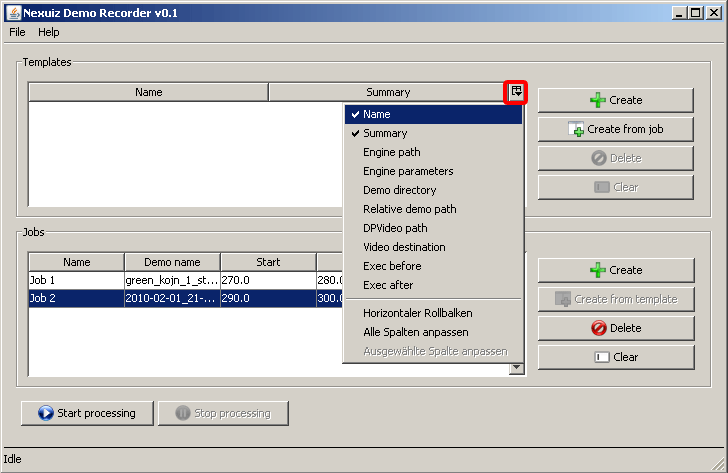

Both the jobs and templates table can be customized. You can define whether to sort the jobs/templates according to a particular column, you can change the order of columns, and you can add and remove (hide) additional columns by clicking the small icon as shown here on this image:

These settings are being saved and automatically restored whenever you close and open the program. In case you messed the columns and want them to be reset to default, go into the settings sub-folder of the Nexuiz Demo Recorder and delete the jobsTable.pref or templatesTable.pref file (.pref for “preferences”)